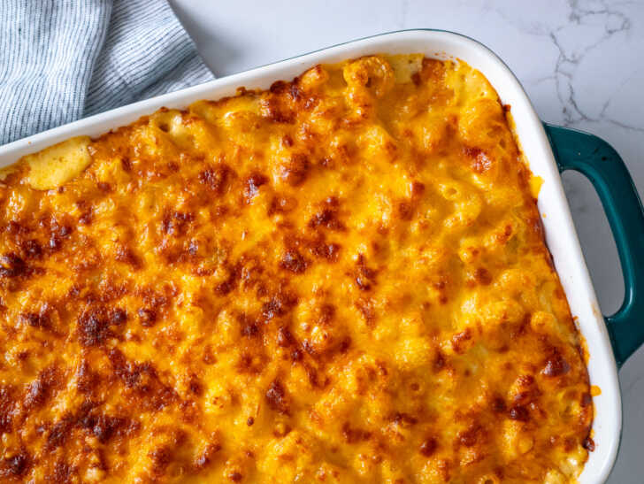

Tini's Famous Mac and Cheese Recipe

Tinike "Tini" Younger is an American chef and social media personality with over
12 million followers on TikTok. This recipe blew up with over 200 million views across all platforms. This macaroni and cheese recipe is a
symphony of different flavors crafted with a blend of cheeses, spices, and corkscrew pasta.
- 1 lb. cavatappi pasta, cooked
- 16 ounces of mozzarella cheese, grated
- 16 ounces of Colby jack cheese, grated
- 8 ounces of cheddar cheese, grated
- 1 teaspoon of garlic powder
- 1 teaspoon of smoked paprika
- 1/2 teaspoon of salt
- 1/2 teaspoon of pepper
- 3 Tablespoons of butter
- 3 Tablespoons of flour
- 1 can Carnation Evaporated Milk
- 2 cups heavy cream
- 1 Tablespoon Dijon mustard
- Preheat oven to 350 degrees Fahrenheit. Grease a 9 x 13 inch baking dish
- Cook cavatappi according to package instructions. Drain and set aside.
- Combine all 3 shredded cheeses in a bowl and divide half into another bowl. Set aside
- Combine garlic powder, smoked paprika, salt, and pepper in a small bowl. Divide in half
and set aside.
- Melt butter in a large skillet over medium heat. Once melted, add half of the season
mixture and flour. Stir until the mixture becomes paste-like, about 3-5 minutes. Add evaporated milk and
whisk until thick. Add heavy cream and the rest of the seasoning mixture and mix until combined. Whisk in
Dijon mustard until thick. Slowly add in half the cheese, allowing it to melt before adding more.
- Stir in cavatappi until coated with cheese sauce.
- Add a layer of cavatappi and then a layer of shredded cheese to prepared baking dish.
Repeat layers
- Bake in preheated oven until cheese is melted and bubbly, about 25-30 min.
- Finish by broiling until top is golden brown, about 2 min.